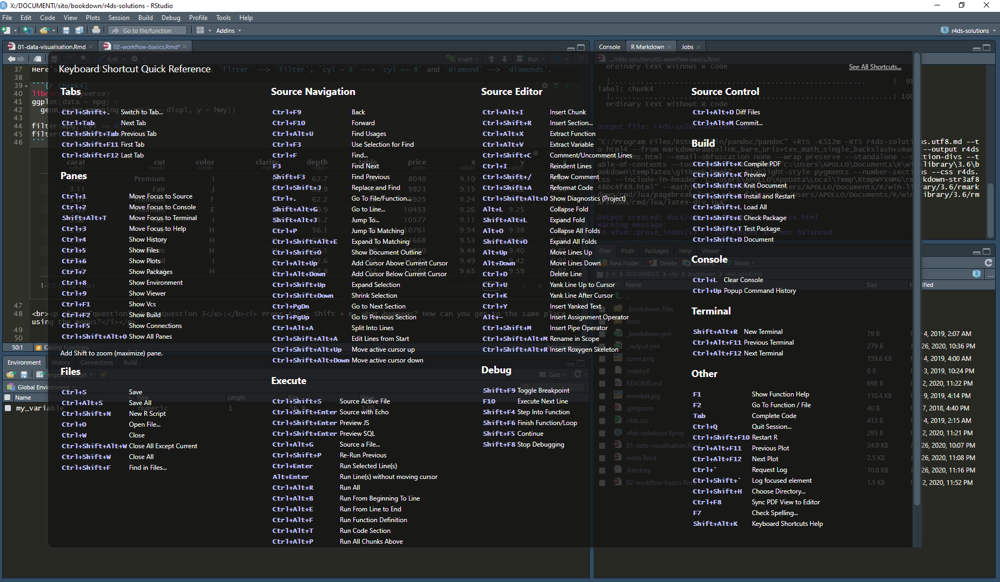

Chapter 4. Workflow: basics
R4DS github reference: r4ds/workflow-basics.Rmd
As a prerequisite install the tidyverse package.
Question 1: Why does this code not work? Look carefully! (This may seem like an exercise in pointlessness, but training your brain to notice even the tiniest difference will pay off when programming.)
## [1] 10In fact the two variables are different: the seventh character is not a classical “i”. At first glance they seems to be equal but they’re not.
Question 2: Tweak each of the following R commands so that they run correctly:
library(tidyverse)
ggplot(dota = mpg) +
geom_point(mapping = aes(x = displ, y = hwy))
fliter(mpg, cyl = 8)
filter(diamond, carat > 3)Here’s the fixed chunk: dota –> data, fliter –> filter, cyl = 8 –> cyl == 8 and diamond –> diamonds.

## # A tibble: 70 x 11
## manufacturer model displ year cyl trans drv cty hwy fl class
## <chr> <chr> <dbl> <int> <int> <chr> <chr> <int> <int> <chr> <chr>
## 1 audi a6 q~ 4.2 2008 8 auto~ 4 16 23 p mids~
## 2 chevrolet c150~ 5.3 2008 8 auto~ r 14 20 r suv
## 3 chevrolet c150~ 5.3 2008 8 auto~ r 11 15 e suv
## 4 chevrolet c150~ 5.3 2008 8 auto~ r 14 20 r suv
## 5 chevrolet c150~ 5.7 1999 8 auto~ r 13 17 r suv
## 6 chevrolet c150~ 6 2008 8 auto~ r 12 17 r suv
## 7 chevrolet corv~ 5.7 1999 8 manu~ r 16 26 p 2sea~
## 8 chevrolet corv~ 5.7 1999 8 auto~ r 15 23 p 2sea~
## 9 chevrolet corv~ 6.2 2008 8 manu~ r 16 26 p 2sea~
## 10 chevrolet corv~ 6.2 2008 8 auto~ r 15 25 p 2sea~
## # ... with 60 more rows## # A tibble: 32 x 10
## carat cut color clarity depth table price x y z
## <dbl> <ord> <ord> <ord> <dbl> <dbl> <int> <dbl> <dbl> <dbl>
## 1 3.01 Premium I I1 62.7 58 8040 9.1 8.97 5.67
## 2 3.11 Fair J I1 65.9 57 9823 9.15 9.02 5.98
## 3 3.01 Premium F I1 62.2 56 9925 9.24 9.13 5.73
## 4 3.05 Premium E I1 60.9 58 10453 9.26 9.25 5.66
## 5 3.02 Fair I I1 65.2 56 10577 9.11 9.02 5.91
## 6 3.01 Fair H I1 56.1 62 10761 9.54 9.38 5.31
## 7 3.65 Fair H I1 67.1 53 11668 9.53 9.48 6.38
## 8 3.24 Premium H I1 62.1 58 12300 9.44 9.4 5.85
## 9 3.22 Ideal I I1 62.6 55 12545 9.49 9.42 5.92
## 10 3.5 Ideal H I1 62.8 57 12587 9.65 9.59 6.03
## # ... with 22 more rowsQuestion 3: Press Alt + Shift + K. What happens? How can you get to the same place using the menus?
This keys combination shows the Keyboard Shortcut Quick Reference. The same reference can be obtained from the Tools menu (eight item).
